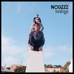
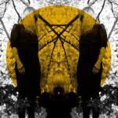

Music Reviews
-

Moby Destroyed
After the incredible success of Play and overuse on adverts, Moby's big, crowd-pleasing electronica needs no introduction. But will Destroyed see him offer anything different?
Mark Davison tries not to get his hopes up... -

Let's Wrestle Nursing Home
In this comparative review, we take a look at Nodzzz and Let's Wrestle, two young garage bands dreading the pains of adulthood.
Juan Edgardo Rodríguez swings... -

Nodzzz Innings
In this comparative review, we take a look at Nodzzz and Let's Wrestle, two young garage bands dreading the pains of adulthood.
Juan Edgardo Rodríguez rides the seesaw... -
The Cars Move Like This
The Cars are back, but is there any magic left in that motor?
Alan Shulman reviews... -

Kate Bush Director's Cut
A mere five and a half years since her last album and Kate Bush is back with a new one. Although she can't claim to have spent much of the time away writing new material for it.
Mark Davison indulges her... -

Psychedelic Horseshit Laced
For all its initial fluff and ambitious aspirations, Psychedelic Horseshit's latest doesn't quite leave a mark; we're hoping it's a grower though.
Akhil Sood reviews... -

Austra Feel It Break
Austra officially scores a spot on the 'bands to watch' list. An appropriate level of buzz for an eclectic new album.
Randi Dietiker is mesmerized... -
Danger Mouse & Daneile Luppi Rome
Danger Mouse and Daniele Luppi team up to pay tribute to the lost genre of the Spaghetti Western soundtrack.
David Hogg reviews while watching A Fistful of Dollars... -
Sloan The Double Cross
Cult Canadian pop-rock band Sloan return with album number 10, in celebration of the band's twenty year anniversary.
Craig Stevens licks his lips, and tastes the pop... -
Death Cab for Cutie Codes and Keys
The perennial indie wallflowers return with another album of lyrical witticisms and soft rock. They make some much needed changes, but is it enough to be exciting?
Andrew Baer is pleasantly surprised but still kind of bored...